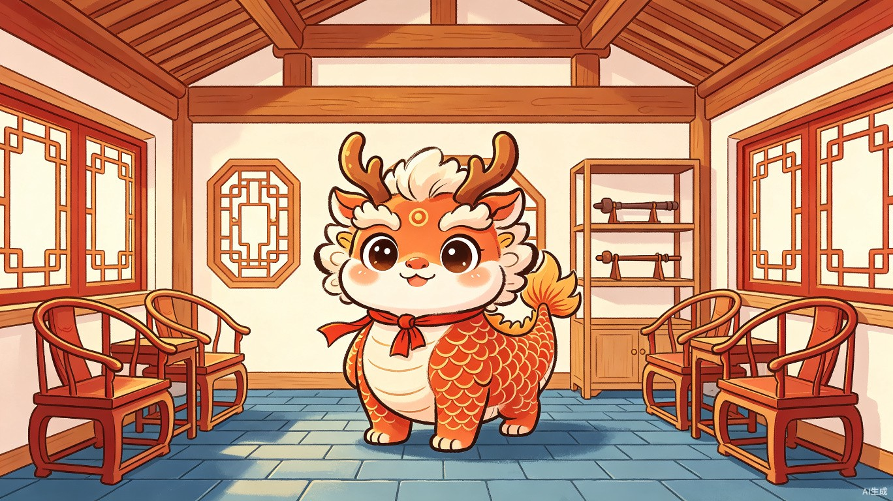
文档目录
DEMO产品定位与核心链路
DEMO核心设计原则
业主自购主材
半包模式说明
半包是当前城市住宅装修的主流模式：装修公司负责全部施工和辅材（水泥、砂、电线、水管、腻子等），业主自行采购主材（瓷砖、地板、洁具、木门、橱柜等）。这种模式让业主既能把控核心品质，又不用操心施工细节。但半包也意味着业主必须在正确的时间节点做出正确的材料决策 -- 这正是本工具要解决的核心痛点。
目标用户画像
典型用户：小林
基本信息：28岁，互联网公司产品经理，首次购房（89㎡两居室），装修预算20万，装修经验为零。
核心痛点：不知道半包该买什么主材、什么时候买；怕装修公司增项；想要现代中式风格但不知道如何跟施工方表达。
行为特征：习惯用App管理生活（记账/健身/日程），对游戏化激励敏感，愿意为省心付费但怕被坑。
期望结果：有一个"装修导航仪"告诉她今天该做什么、该买什么、该花多少钱，最终住进理想中的现代中式家。
核心用户故事
| 场景 | 作为... | 我想要... | 以便... | 验收标准 |
|---|---|---|---|---|
| 发现产品 | 装修小白 | 3秒理解这个产品能帮我做什么 | 决定是否值得继续探索 | 入口演变动画让我直观看到"毛坯变雅居" |
| 风格确认 | 风格迷茫者 | 通过简单互动确认自己喜欢的风格 | 获得个性化的装修方向 | 5题对话流给出风格诊断报告，匹配度>=80% |
| 首步通关 | SOP新手 | 清晰知道第一步该做什么、怎么做 | 建立对产品的信任感 | 完成量房沟通步骤，年兽获得第一个装备 |
DEMO核心链路（用户自助5分钟 / 评委演示2分钟）
flowchart LR
Z["0.入口演变
毛坯→雅居
8秒"] --> A["1.年兽对话流
风格探测+需求采集
90秒"]
A --> B["2.生成半包计划
+智能预算拆解
30秒"]
B --> C["3.SOP步骤执行
含AI自动触发
120秒"]
C --> D["4.动态预算管控
阶段释放+健康度
30秒"]
D --> F["6.收尾入住
房子进化
30秒"]
E["5.我的家反馈
贯穿全程
伴随"]
Z -.-> E
A -.-> E
B -.-> E
C -.-> E
D -.-> E
F -.-> E
style Z fill:#E8EEF7,stroke:#4A6FA5,color:#2C2C2C
style A fill:#E8EEF7,stroke:#4A6FA5,color:#2C2C2C
style B fill:#E8EEF7,stroke:#4A6FA5,color:#2C2C2C
style C fill:#E8F5E8,stroke:#5B8C5A,color:#2C2C2C
style D fill:#E8F5E8,stroke:#5B8C5A,color:#2C2C2C
style E fill:#F0E8F5,stroke:#8B6F47,color:#2C2C2C
style F fill:#F0E8F5,stroke:#8B6F47,color:#2C2C2C
与完整版的差异
| 维度 | DEMO版 | 完整版 |
|---|---|---|
| 装修模式 | 半包（业主自购主材） | 全包/半包/清包可选 |
| 默认风格 | 现代中式 | 多风格可选 |
| 流程自由度 | 强制线性，不可跳步 | 可自由选择步骤 |
| SOP覆盖 | 半包6大阶段（20步） | 多模式30+步 |
| AI能力 | 户型识别+合同鉴别+质检（简化） | 全流程分布式AI |
| 养成系统 | 中式房子+水墨年兽 | 虚拟建房进度 |
| 传播机制 | 无 | 社交裂变 |
入口界面设计：毛坯→雅居实时演变
整体架构
入口页 (HeroView)
├── 背景层：宣纸纹理 (#F5F0E8) + 淡墨晕染
├── 场景层：房间演变容器 (SVG双层方案)
│ ├── 底层：线稿毛坯房 (灰白线条，极简)
│ └── 上层：实体现代中式雅居 (完整渲染，初始隐藏)
│ └── 遮罩层：SVG mask 根据滑动进度揭示实体层
├── 粒子层：Canvas 水墨粒子系统
├── 交互层：滑动指示器 + 进度条
├── 年兽层：演变完成后从门口走入
└── 操作层：演变完成后浮现"开始装修"按钮
页面状态
| 状态 | 触发条件 | 视觉表现 |
|---|---|---|
| 初始态 | 页面加载完成 | 线稿毛坯房（SVG路径绘制），底部提示"← 滑动装修你的家 →" |
| 演变态 | 用户滑动 / 自动播放 | 房间按进度逐步装修（SVG mask遮罩揭示），进度条实时更新 |
| 完成态 | 进度达到100% | 完整雅居（SVG实体层完整显示）+ 年兽入场 + 水墨粒子庆祝 |
核心行为
- 默认自动播放：页面加载后3秒开始以0.5x速度自动演变，全程约8秒。用户随时可手动接管。
- 双向滑动：左右滑动均可触发，向右为主方向。向左可"撤销装修"。
- 松手暂停：用户停止滑动时，演变暂停在当前进度，方便仔细观察。
5阶段演变时序
阶段1：结构呈现（0% → 20%）
视觉变化：初始为灰色线条勾勒的毛坯房平面图（墙体轮廓、门窗开口、房间分区）。演变过程中线条从灰色（#CCCCCC）渐变为深灰色（#666666），线条加粗（1px → 2px）。完成时房间结构轮廓清晰呈现，类似建筑蓝图。
动画技术：SVG stroke-dasharray + stroke-dashoffset 实现线条"绘制"动画。各条线段按房间结构顺序依次绘制（外轮廓 → 内墙 → 门窗）。动画时长1.5秒。
特效：每完成一个房间分区，该分区线条闪烁一次（opacity 0.5 → 1 → 0.8）。线条绘制声效果DEMO阶段不实现，标记为未来扩展。
底部提示："格局初现"
阶段2：基础装修（20% → 40%）
视觉变化：墙面区域从空白逐渐填充为微水泥质感（米白色 #FAF7F2，带细微纹理）；地面区域填充为胡桃木纹理（棕色渐变 #8B6F47 → 加深20%）；天花板区域填充为白色（#FFFFFF）。
动画技术：SVG fill-opacity 从0到1渐变，使用 SVG pattern 定义微水泥纹理和胡桃木纹理。填充顺序：天花板 → 墙面 → 地面（从上到下，符合装修顺序）。动画时长1.5秒。
特效：每填充完成一个面，该面边缘出现淡墨晕染扩散效果（CSS radial-gradient 从中心向外扩散，持续0.5秒后消失）。地面填充完成后，出现轻微的"灰尘粒子"飘落效果（5-8个微小圆点从上往下飘落）。
底部提示："墙面焕新"
阶段3：家具入场（40% → 60%）
视觉变化：主要家具从线条轮廓渐变为实体：客厅格栅隔断（檀褐 #8B6F47）+ 圈椅 + 茶几；餐厅条案 + 圈椅；卧室床架（胡桃木）+ 床头柜；厨房橱柜轮廓。家具入场顺序：从大到小，从固定到可移动。
动画技术：每个家具使用独立的 SVG group。入场动画：scale(0.8) + opacity(0) → scale(1) + opacity(1)，带轻微弹跳（overshoot easing）。入场间隔0.3秒/件，形成"依次弹出"的节奏感。动画时长2秒。
特效：每件家具入场时，从落点向外扩散一圈淡墨色波纹（CSS animation：scale 0→1.5 + opacity 0.5→0，持续0.4秒）。所有家具入场完成后，整体场景轻微"settling"动画（所有元素向下位移2px再回弹，模拟重力落稳感）。
底部提示："家具入场"
阶段4：装饰细节（60% → 80%）
视觉变化：灯光系统点亮（天花板灯槽发光、落地灯亮起）；软装出现（绿植竹叶造型、抱枕、地毯）；装饰细节（书法挂画、瓷器摆件、窗花格栅）。场景光照从冷白（6000K）渐变为暖黄（3000K），营造温馨感。
动画技术：灯光：opacity 0 → 1 + SVG filter feGaussianBlur 发光滤镜（或叠加层opacity变化）。软装：从上方"落下"（translateY -20px → 0），带轻微旋转（rotate -3deg → 0deg）。光照变化：SVG filter feColorMatrix 色温变换或叠加层CSS filter渐变。动画时长1.5秒。
特效：灯光点亮瞬间，全屏出现轻微"闪光"效果（白色overlay opacity 0.3 → 0，持续0.2秒）。窗花格栅出现后，窗外透入暖色光线（CSS gradient 模拟阳光透过窗棂）。Canvas粒子系统启动：3-5片竹叶从右侧缓缓飘入，穿过场景后消失。
底部提示："软装点睛"
阶段5：年兽入场（80% → 100%）
视觉变化：门口区域亮起（门缝透出暖光）。水墨年兽（Q版狮头鹿角形象，朱砂红主色调）从门口探头，左右张望。年兽走入房间，移动到场景中央偏下位置。站定后做"作揖"动作（前爪合拢 + 身体前倾）。头顶弹出对话气泡："这就是你未来新家的样子！跟着我，一步步把它变成现实吧~"
动画技术：年兽入场：从门口 translateX(-100%) → translateX(0)，带轻微弹跳（ease-out-bounce）。走路动画：身体上下起伏（translateY 0 → -5px → 0），每0.4秒一个周期。作揖动作：rotate(0) → rotate(-5deg) + scale(1) → scale(0.95)，持续0.6秒。气泡弹出：scale(0) + opacity(0) → scale(1) + opacity(1)，带弹性回弹。动画时长1.5秒。
特效：年兽入场时，脚下留下水墨脚印（3-4个淡墨圆点，1.5秒后渐隐）。年兽站定瞬间，全屏爆发水墨粒子庆祝（Canvas：30-50个墨滴从中心向四周扩散，gravity 0.5，friction 0.95，持续2秒）。背景宣纸纹理出现轻微波纹（CSS radial-gradient 从年兽位置向外扩散）。
底部提示：演变为"🎉 装修完成！"
交互逻辑
滑动控制
| 输入方式 | 行为 |
|---|---|
| 鼠标拖拽（桌面端） | 左右拖拽控制演变进度，拖拽速度影响演变速度 |
| 手指滑动（移动端） | 左右滑动控制演变进度，支持惯性滑动 |
| 滚轮（桌面端备选） | 上下滚轮映射为左右进度 |
| 自动播放 | 无操作时3秒后启动，速度为正常0.5x |
进度映射
interface HeroProgress {
currentProgress: number; // 0.0 ~ 1.0
isAutoPlaying: boolean;
isDragging: boolean;
// 阶段判断
getCurrentStage(): 1 | 2 | 3 | 4 | 5;
// 获取当前阶段内进度（0.0 ~ 1.0）
getStageProgress(): number;
}
状态流转
初始态 ──(滑动/3秒自动)──→ 演变态 ──(进度达100%)──→ 完成态
↑ │ │
│ │(回退滑动) │(点击"开始装修")
└─────────────────────────┘ ↓
OnboardingView
完成态衔接
演变完成后，页面状态：
- 年兽对话：气泡显示"这就是你未来新家的样子！跟着我，一步步把它变成现实吧~"，持续3秒后自动收起
- 按钮浮现：底部中央浮现主按钮"开始装修"（黛蓝背景，白色文字，12px圆角）。按钮浮现动画：translateY(20px) + opacity(0) → translateY(0) + opacity(1)，0.4s ease-out
- 背景变化：宣纸背景轻微变暗（brightness 1 → 0.95），突出按钮
- 二次操作：点击"开始装修" → 淡入过渡到 OnboardingView（对话流风格探测）；再次滑动 → 演变回退，重新体验
界面原型：三态演变（高保真）
初始态（0%）
布局：宣纸纹理背景，中央线稿毛坯房（SVG路径绘制，含门窗开口与地面分割线，灰色stroke #B4B4B4，无fill），底部滑动提示，右上角"蓝图模式"标签。
演变态（50%）
布局：微水泥质感墙面（渐变 #FAF7F2），胡桃木色地面（渐变 #8B6F47），家具轮廓显现（沙发、落地灯简化形状，SVG mask遮罩揭示），底部发光进度条50%，右上角进度百分比。
完成态（100%）
布局：完整雅居（SVG实体层完整显示）+ 绿植（竹青渐变）+ 暖色灯光（glow效果）+ 年兽简影（中央圆点+角），黛蓝渐变"开始装修"按钮带阴影浮现，底部庆祝文案，右上角100%徽章。
界面原型：入口首屏（高保真）
入口首屏布局：全屏宣纸渐变背景，顶部品牌名+装饰线，中央大字号动态文案（"滑动屏幕"+黛蓝强调色"装修你的家"），底部线稿房间缩略图+滑动提示动画，底部系统Home Indicator。新中式极简，留白充足。
技术实现方案
方案A：SVG Mask（DEMO唯一路径）
实现方式：线稿层（SVG path灰色stroke）+ 实体层（SVG group完整填充）+ SVG mask遮罩层。通过控制mask的path reveal进度，实现从毛坯到精装的可控演变。
演变控制：SVG stroke-dasharray / stroke-dashoffset 绘制线稿，mask-url 遮罩揭示实体层，fill-opacity 控制填充显现，所有属性通过CSS transition驱动。
DEMO优势：矢量缩放不失真，文件小（单SVG <50KB），动画流畅（60fps），可直接导出设计稿SVG，前端12小时完成核心演变。
<!-- SVG双层方案 --> <svg viewBox="0 0 400 300"> <g id="outline"><!-- 线稿层：灰色stroke --></g> <g id="solid" mask="url(#revealMask)"><!-- 实体层：完整填充 --></g> <mask id="revealMask"><rect width="400" height="300" fill="white"/></mask> </svg> <script>/* 通过JS控制mask中rect的x/width实现从左到右揭示 */</script>
方案C：CSS几何图形组合（正式版扩展）
纯HTML div（矩形/圆形）+ CSS绝对定位组合简化房间场景。无需SVG素材，前端独立开发。DEMO阶段不实现。
方案B：CSS Mask-Image（正式版扩展）
线稿PNG + 实体PNG两张图片，CSS mask-image揭示。可用真实照片级纹理。DEMO阶段不实现。
粒子系统
使用 Canvas 2D 实现水墨粒子。粒子类型：墨滴（圆形，黑色半透明）、竹叶（椭圆形，绿色）、灰尘（微小圆点，灰色）。物理参数：gravity 0.2-0.5，friction 0.95，lifeSpan 1.5-2.5秒。
移动端适配
| 设备 | 房间场景 | 年兽大小 | 滑动方向 |
|---|---|---|---|
| PC端（>=1024px） | 占视口70%，居中 | 120px高 | 左右拖拽 |
| 平板（768-1024px） | 占视口80%，居中 | 100px高 | 左右滑动 |
| 移动端（<768px） | 占视口90%，全宽 | 80px高 | 左右滑动 |
传播优化设计
录屏友好
演变过程全程无UI遮挡（进度条极简，可隐藏）。完成态年兽+雅居画面完美居中，适合截图。自动播放模式下，8秒完整演变可直接录屏传播。
社交分享文案预设
页面标题："滑动屏幕，看我的毛坯房变成现代中式雅居！" 分享缩略图：完成态年兽+雅居截图。内置分享按钮DEMO阶段不实现，标记为未来扩展。
与现有PRD的衔接
- 设计风格：严格遵循"新中式扁平卡通"设计系统（7色体系、字体规范）
- 年兽形象：使用Section 7定义的水墨年兽设定（Q版狮头鹿角、朱砂红）
- 房间风格：现代中式（微水泥、胡桃木、格栅隔断）
- 后续流程：点击"开始装修"后进入对话流风格探测（Section 4）
- 演示模式：入口演变可作为评委向导的"开场Hook"内容
评委向导——一键自动演示
为什么需要评委向导
本产品功能链路长、交互环节多（对话流风格探测 → SOP步骤含AI自动触发 → 预算管理 → 我的家），评委手动探索很难在评审限时的3-5分钟内完整体验所有核心流程。一键自动演示确保每位评委都能看到产品的最佳状态和完整价值链条，不因操作门槛而遗漏任何亮点。演示脚本2分钟为压缩精华版，完整用户自助体验约5分钟。
设计模式：混合智能演示
采用三层混合架构，兼顾真实感与稳定性：
自动跳转 / 模拟交互
在真实产品界面上自动执行点击、输入、页面跳转，评委看到的就是真实代码运行的效果。
逐步高亮 Spotlight
在关键数据、按钮、结果上叠加高亮圆圈与解说Tooltip，引导视线聚焦核心价值。
录屏兜底
任何交互环节失败超过3次，自动无缝切换到预录视频继续播放，确保演示不中断。
演示脚本（5章，2分钟）
| 章节 | 内容 | 时长 | 演示模式 |
|---|---|---|---|
| 开场Hook | 痛点共鸣 + 产品定位一句话（含品牌名露出） | 15秒 | 全屏Overlay |
| 对话流风格探测 | 年兽对话气泡自动推进，展示风格探测 | 28秒 | 自动跳转+模拟输入 |
| 装修流程与AI触发 | 展示装修流程，重点演示AI合同鉴别 | 37秒 | 自动跳转+Spotlight |
| 预算与我的家联动 | 智能预算分配 + 我的家装备进化 | 25秒 | Spotlight高亮+动画 |
| 收尾CTA | 核心价值重申 + 团队信息 | 15秒 | 全屏Overlay |
与正常用户模式的切换机制
| 环节 | 交互设计 |
|---|---|
| 入口 | 右下角浮动球"一键演示 评委专用"；首次进入带?demo=1参数自动弹出确认框 |
| 演示中 | 全局拦截用户输入，顶部显示"演示进行中"轻提示与进度条；鼠标移动显示自定义光标 |
| 退出 | 演示结束前3秒提示即将结束；退出后保留演示数据供评委手动探索 |
| 环境隔离 | 演示模式自动切换至Mock数据层、固定API延迟、预置AI回复，不受网络和模型波动影响 |
技术实现建议
高亮引擎：Driver.js
轻量4KB，支持聚焦动画与多步骤序列，社区成熟，适合DEMO快速集成。
模拟交互：DemoActor
自定义DemoActor类封装合成事件（dispatchEvent），模拟真实点击与输入，可复用。
动画时序：GSAP Timeline
精确控制多步骤序列的时间轴，支持暂停、加速、跳过，调试友好。
配置化脚本
JSON Schema定义演示流程，非开发人员可调整时长、文案与高亮节点，与产品功能解耦。
兜底视频
HTML5 Video + 时间戳映射，任何步骤失败时无缝切换，从当前章节继续播放。
DEMO环境配置清单
| 配置项 | 内容 | 用途 |
|---|---|---|
| 城市系数表 | 预设15个城市（一线/新一线/二线各5个）的人工费和材料费系数 | 预算拆解引擎计算 |
| 材料价格表 | 50种常见主材的单价区间（按低/中/高三档） | 采购清单自动生成 |
| 预置合同模板 | 1份标准半包合同（含5个风险点标注） | AI合同鉴别演示 |
| 预置施工照片 | 3张质检照片（合格/轻微问题/严重问题各1张） | AI施工质检演示 |
| 户型数据 | 3套户型简图（89㎡两居/120㎡三居/150㎡复式） | AI户型识别演示 |
| AI回复模板 | 风格诊断报告模板 × 5种风格、合同风险分析模板 × 5条、质检报告模板 × 3种结果 | AI功能模拟回复 |
| 演示模式配置 | JSON配置：各章节时长、自动跳转延迟、Spotlight节点坐标、年兽动画触发点 | 评委向导自动演示 |
原型展示
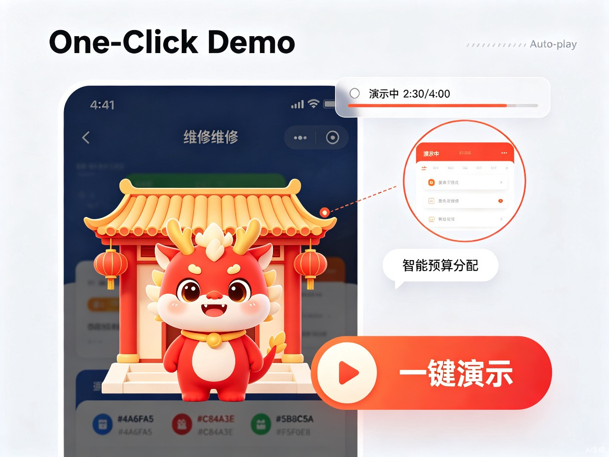
1. 演示入口对正常用户可见但弱化（收缩为小圆点），对评委模式强化（自动弹出）
2. 采用纯前端实现演示控制器，无需后端支持，适配DEMO纯前端架构
3. 演示脚本配置与产品功能模块解耦，产品迭代时独立维护
竞品分析与差异化定位
为什么选择这四家竞品
土巴兔、住小帮、好好住、酷家乐分别代表了装修行业的四种主流产品形态——交易平台、内容社区、兴趣社区、设计工具。通过横向对比，可以清晰定位本产品的差异化空间。
| 竞品 | 核心定位 | 半包支持 | 预算工具 | 游戏化 | AI能力 | SOP引导 | 明显短板 |
|---|---|---|---|---|---|---|---|
| 土巴兔 | 一站式装修平台 | 有 | 静态报价单 | 无 | AI质检、智能报价 | 弱 | 平台撮合属性强，对"自购主材"的半包业主指导弱 |
| 住小帮 | 灵感+避坑社区 | 弱 | 整屋预算清单（静态） | 无 | 户型分析 | 无 | 浏览为主转化弱；无施工标准流程引导 |
| 好好住 | 家装社区 | 弱 | 无 | 无 | 无 | 无 | 社区属性大于工具属性，无流程引导能力 |
| 酷家乐 | 3D设计工具 | 无 | 设计算量一体化 | 无 | 10分钟出效果图 | 无 | 设计门槛高，施工监管/资金保障缺失 |
| 本产品 | 半包通关导航仪 | 深度 | 动态SOP联动 | 水墨年兽 | 户型+合同+质检 | 强制线性 | DEMO阶段功能简化 |
市场空白点：无人覆盖的"黄金三角"
土巴兔的逻辑
"帮你找到靠谱的装修公司"——业主仍然是被动接受方，平台不介入具体施工决策
住小帮的逻辑
"给你灵感和信息"——不做任何流程约束，用户看完仍然不知道该怎么做
酷家乐的逻辑
"让你自己设计"——对小白门槛过高，设计能力≠装修执行力
我们的逻辑
"手把手带你通关"——SOP强制线性解锁+AI辅助决策+水墨年兽情感陪伴+动态预算管控
差异化壁垒
| 壁垒类型 | 具体内容 | 竞品可复制性 |
|---|---|---|
| 技术壁垒 | 三大AI工具链（户型识别+合同鉴别+施工质检）的垂直场景整合，非通用AI能力可替代 | 中（需装修领域数据积累） |
| 体验壁垒 | 强制线性SOP降低决策焦虑，用户一旦习惯线性引导，切换成本极高 | 低（需要重构产品架构） |
| 文化壁垒 | 水墨年兽IP的东方美学独占性，形成品牌记忆点，竞品难以模仿文化内核 | 极低（IP建设周期长） |
| 数据壁垒 | 半包预算拆解引擎基于真实施工数据，城市人工费系数、主材价格波动模型 | 低（需长期数据积累） |
行业数据支撑
（数据来源：土巴兔2024半包装修用户行为报告第2章）
（数据来源：住小帮2024家装消费调研）
（数据来源：中国建筑装饰协会2024年报告）
引导式需求采集 + AI风格探测（对话流）
设计思路：从"问卷调查"到"和年兽聊天"
传统装修工具的需求采集采用表单式问卷，用户感知为"填写任务"，流失率高。本产品将需求采集重新设计为年兽对话气泡的渐进式交互——用户感知为"和可爱的年兽聊天"，在轻松对话中完成风格探测和需求确认。
对话流架构：第0阶段「需求诊断」
对话流位于SOP正式流程之前，作为独立的"第0阶段"。完成对话流后，AI基于采集数据一键生成个性化半包装修计划，再进入阶段一的强制线性SOP。
格栅+微水泥
白墙+原木
对话流设计原则
渐进式披露
每次只展示1题，答完才出现下一题，避免信息过载。整个风格探测控制在90秒内完成
即时情感反馈
每答2-3题，年兽给出阶段性洞察（"感觉你喜欢安静有质感的空间"），让用户感到被理解
去术语化表达
选项不用专业术语，用生活化语言（"越素净越好"而非"低饱和度色系"）
无缝过渡
测试结果页按钮文案为"确认，继续"而非"生成报告"，自然衔接到预算确认
采集数据结构
| 采集项 | 来源 | 选项设计 | 用途 |
|---|---|---|---|
| 风格偏好 | AI风格探测对话流 | 5题渐进式选择（视觉+色彩+材质+生活方式+最终二选一） | 贯穿SOP的风格统一、预算拆解引擎的风格溢价系数 |
| 装修预算 | 对话流基础问卷 | 预算区间：10万以下/10-20万/20-30万/30万以上 | 智能预算拆解引擎的初始输入 |
| 城市 | 对话流基础问卷 | 城市选择器 | 预算拆解引擎的城市人工费系数 |
| 房屋面积 | 对话流基础问卷 | 输入框 + 常见户型快捷选择 | 预估工期、材料用量 |
| 特殊需求 | 对话流基础问卷 | 多选：儿童房/老人房/宠物/居家办公/智能家居 | SOP步骤中的个性化提醒 |
5题完整题目列表
| 题号 | 题目类型 | 年兽提问话术 | 选项 | 探测维度 |
|---|---|---|---|---|
| Q1 | 图片选择 | "如果下面四个客厅让你选，你最想住进哪一个？" | A.留白墙面+胡桃木家具 B.温暖原木+布艺沙发 C.裸露管线+冷灰调 D.繁花壁纸+水晶吊灯 | 基础风格偏好 |
| Q2 | 颜色偏好 | "关于颜色，你更偏向哪种感觉？" | A.米白、浅灰、原木色 —— 越素净越好 B.深蓝、墨绿、暖棕 —— 要有层次感 C.明亮撞色、活力橙黄 —— 家里要有生气 | 色调倾向 |
| Q3 | 生活方式 | "周末在家，你更喜欢怎么度过？" | A.阳台泡茶看晨光 B.开放式厨房做早午餐 C.窝沙发追剧点外卖 D.书房看书需要独处 | 空间功能需求 |
| Q4 | 材质触感 | "下面这些材质，你更喜欢摸上去的感觉？" | A.温润胡桃木 B.粗糙微水泥 C.柔软亚麻布 D.冰凉大理石 | 材质偏好 |
| Q5 | 图片终选 | "再帮我选最后一组图片，我就告诉你答案~" | A.现代中式（格栅+微水泥） B.北欧简约（白墙+原木） | 风格确认 |
界面原型：风格诊断报告结果页
布局：年兽庆祝动画区 → 环形匹配度进度条 → 风格名称 → 关键词标签 → 灵感图集网格 → 主按钮
AI户型图识别
在对话流的"户型确认"环节，年兽自然引导用户上传户型图："上传你的户型图，AI帮你自动识别房间数量和面积~" 识别结果自动填充到后续SOP步骤1的量房沟通中。
AI户型识别DEMO实现路径
| 环节 | DEMO实现方式 | 所需素材 | 耗时预估 |
|---|---|---|---|
| 上传引导 | 年兽气泡提示"上传户型图"，点击唤起文件选择器 | 无 | 已集成 |
| 识别动画 | 上传后显示水墨晕染加载动画（2秒），模拟AI处理过程 | CSS动画 | 30分钟 |
| 结果展示 | 预置3套户型数据（两居室89㎡/三居室120㎡/复式150㎡），根据用户选择的预算区间匹配展示 | 3张户型简图（SVG线稿） | 1小时 |
| 数据填充 | 识别结果自动填充到SOP步骤1的量房沟通表单中 | 表单组件 | 已集成 |
装修流程（强制解锁 · AI能力嵌入各步骤）
核心设计：不给选择，只给方向
半包模式下，装修小白面临两个核心难题：一是不知道施工流程，二是不知道什么时候该买什么主材。DEMO版采用强制线性解锁机制，将半包全流程拆解为6大阶段20个步骤，用户必须按顺序完成每一步，彻底消除决策焦虑。
半包6大阶段20步
每步结构：五步闭环
| 步骤 | 内容 | 用户操作 |
|---|---|---|
| 1.年兽引导 | 水墨年兽弹出气泡"接下来我们要做XXX" | 点击"知道了" |
| 2.操作指引 | 展示该步骤的操作指南（做什么+怎么做+验收标准） | 阅读指引 |
| 3.AI辅助 | 场景自动触发AI工具（量房时唤起户型识别/签合同时强制合同鉴别/验收时自动质检） | 按步骤自动唤起 |
| 4.完成确认 | 用户确认已完成，可上传照片佐证 | 点击"已完成" |
| 5.年兽反馈 | 年兽获得灵气，中式房子发生变化，解锁下一步 | 观看动画反馈 |
AI功能DEMO实现路径
1. AI合同鉴别（步骤3强制触发）
| 环节 | DEMO实现方式 | 所需素材 |
|---|---|---|
| 合同模板 | 预置1份标准半包合同模板（含5个常见风险点：增项条款模糊/工期无违约金/材料品牌未标注/验收标准缺失/保修期过短） | 1份合同文本（HTML排版） |
| 扫描动画 | 用户上传后显示"AI正在分析合同..."进度条（3秒），伴随扫描线从上到下划过合同文本 | CSS扫描线动画 |
| 风险标注 | 扫描完成后，5个风险点依次高亮闪烁（每处0.5秒），右侧弹出风险等级卡片（红/黄/绿三级） | 高亮CSS + 风险卡片组件 |
| 修改建议 | 每处风险附带AI修改建议文案（预置），用户可一键"采纳建议"查看优化后的条款 | 预置建议文案5条 |
2.2 AI施工质检报告界面
布局：质检照片+AI检测框overlay → 结果徽章（竹青=合格/朱砂=需整改）→ 具体问题清单 → 年兽表情联动
2. AI施工质检（步骤10/12/13/15自动触发）
| 环节 | DEMO实现方式 | 所需素材 |
|---|---|---|
| 照片上传 | 用户点击"已完成"后提示"上传施工照片进行AI质检" | 无 |
| 检测动画 | 上传后显示检测框从左上角扫描到右下角（2秒），模拟AI视觉分析 | CSS检测框动画 |
| 结果展示 | 预置3张施工照片（合格/轻微问题/严重问题各1张），根据步骤自动匹配展示结果 | 3张施工照片 + 检测框overlay |
| 质检报告 | 弹出质检报告卡片：合格（竹青徽章）/ 需整改（朱砂徽章）+ 具体问题描述 | 质检报告卡片组件 |
半包主材决策提醒机制
半包模式下，业主最核心的痛点是"不知道什么时候该买什么"。系统在关键节点前主动推送采购提醒：
| 提醒节点 | 提前时间 | 提醒内容 |
|---|---|---|
| 水电改造前 | 3天 | 需确认橱柜方案、PPR水管品牌、地漏型号、开关面板数量 |
| 泥工进场前 | 2天 | 墙地砖需到场、门槛石/窗台石需定制、确认美缝方案 |
| 木工进场前 | 3天 | 木门商家需复测、全屋定制最终方案确认 |
| 油工进场前 | 2天 | 涂料/壁纸需选购、确认色号（自然光+人工光双验证） |
| 安装季 | 5天 | 按顺序预约：厨卫吊顶→橱柜→木门→地板→开关灯具→洁具 |
现代中式风格施工注意点
微水泥工艺
现代中式常用微水泥替代传统涂料，需注意基层平整度要求和养护周期（7天以上）
格栅安装节点
格栅隔断需在木工阶段同步安装，与吊顶/墙面收口处理要提前规划
胡桃木材质选择
地板、家具、柜体统一胡桃木色系，注意不同批次色差控制
无主灯设计
现代中式推崇无主灯，需在木工吊顶阶段预埋灯槽和变压器位置
异常状态与错误处理
| 异常场景 | 触发条件 | 界面表现 | 用户操作 |
|---|---|---|---|
| 网络断开 | WiFi/4G断连 | 年兽抱头蹲下，提示"信号不太好，稍后再试" | 提供"重试"按钮，点击后恢复对话进度 |
| AI识别失败 | 户型图上传后识别超时 | 年兽挠头困惑，提示"这张图有点复杂，让我再试试" | 自动重试1次，仍失败则降级为手动输入户型信息 |
| 加载中 | 风格诊断报告生成中 | 水墨晕染动画+毛笔笔触进度条，年兽转圈等待 | 无需操作，3秒内自动完成 |
| 操作中断 | 用户中途退出对话流 | 下次进入时年兽提示"上次我们聊到这里，继续吗？" | 点击"继续"恢复上次进度，或"重新开始" |
界面原型补充
装修流程AI触发高亮态
布局：Spotlight聚焦当前步骤 → 年兽引导气泡 → AI工具浮层从底部滑入 → 脉冲动画高亮
AI合同鉴别无风险状态
布局：年兽开心动画区 → 绿色通过徽章 → 正面条款摘要 → 确认按钮
半包动态预算管理——装修钱袋子
为什么半包预算最难管
半包模式下，业主自行采购主材，装修公司只报人工+辅材费用。这意味着业主需要同时管理两条资金线，且必须在正确的时间节点做出采购决策。73%的半包业主表示无法准确预估材料用量，68%的装修纠纷源于增项未提前告知。
五大核心设计原则
原则1：预算与SOP强绑定
预算不是一次性给出，而是按6大阶段逐步"解锁"释放，完成阶段才能使用下一阶段预算
原则2：主材预算与采购联动
每个采购节点生成独立子预算，支持记录实际支出，自动计算偏差
原则3：增项书面确认+上限控制
增项不得超过合同总额10%，超出部分由施工方承担，必须经业主确认
原则4：可视化健康度实时反馈
铜钱形状进度环+三种状态颜色（健康竹青/预警檀褐/危险朱砂）
原则5：年兽情感化预警
预算超支时年兽从"开心"变"困惑"，正向反馈时年兽跳舞庆祝
功能1：智能预算拆解引擎
界面原型：预算初始设置向导
布局：年兽引导气泡 → 步骤进度条 → 输入区域 → 532分配实时预览 → 导航按钮
用户输入总预算后，系统按"532原则"自动分配：
功能2：SOP联动预算释放
预算按施工阶段逐步解锁，与SOP强制线性机制深度绑定。完成一个阶段，释放对应预算池。
| 阶段 | 释放比例 | 预算金额（以20万为例） | 用途 |
|---|---|---|---|
| 前期准备 | 5% | ¥10,000 | 设计费、量房费、效果图 |
| 主体拆改 | 10% | ¥20,000 | 拆改人工+垃圾清运 |
| 水电改造 | 20% | ¥40,000 | 水电人工+辅材（电线/水管/防水） |
| 泥木工程 | 25% | ¥50,000 | 泥工+木工+防水+贴砖 |
| 油工安装 | 25% | ¥50,000 | 油漆+安装人工+厨卫吊顶 |
| 收尾入住 | 15% | ¥30,000 | 洁具灯具+软装+保洁 |
功能3：主材采购预算追踪
与SOP主材提醒机制打通，每个采购节点生成独立子预算，支持渠道系数和损耗计算。
| 主材品类 | 预算 | 渠道 | 损耗系数 | 状态 |
|---|---|---|---|---|
| 瓷砖 | ¥25,000 | 品牌直营 | 3% | 已采购 |
| 地板 | ¥18,000 | 市场散购 | 8% | 选购中 |
| 橱柜 | ¥30,000 | 品牌定制 | 5% | 待采购 |
| 木门 | ¥12,000 | 工厂直供 | 3% | 待采购 |
| 洁具 | ¥8,000 | 电商采购 | 2% | 待采购 |
功能4：增项预警防火墙
第一层：上限锁定
增项不得超过合同总额的10%，超出部分由施工方承担
第二层：90%预警
当某阶段支出超过释放预算的90%时，触发年兽预警（表情变困惑）
第三层：书面确认
所有增项必须经业主书面确认，自动生成增项原因标签
功能5：预算健康度仪表盘
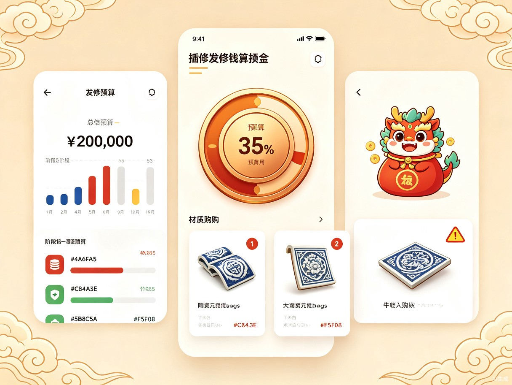
| 状态 | 颜色 | 触发条件 | 年兽表现 |
|---|---|---|---|
| 健康 | 竹青 #5B8C5A | 预算执行率低于70% | 开心跳跃，尾巴摇摆 |
| 预警 | 檀褐 #8B6F47 | 预算执行率70%~90% | 表情困惑，挠头思考 |
| 危险 | 朱砂 #C84A3E | 预算执行率超过90% | 紧张抱头，弹出 urgent 提醒 |
与我的家的深度联动
预算管理不是独立模块，而是我的家的核心驱动力之一：
完成预算拆解
用户首次设置总预算并完成智能拆解，年兽获得"铜钱袋"装备，解锁预算仪表盘功能
阶段预算释放
每完成一个SOP阶段，对应预算池解锁，年兽获得"玉算盘"道具，可在房子里摆放
预算健康达标
连续3个阶段预算执行偏差低于15%，年兽获得"理财小能手"称号，房子增加"账房"家具
错误处理与边界情况
| 边界场景 | 触发条件 | 系统响应 | 用户引导 |
|---|---|---|---|
| 预算超支15% | 某阶段实际支出超过释放预算的115% | 强制弹窗拦截，年兽表情变"困惑"，背景变预警色 | 必须选择"确认增项"（需填写原因）或"返回修改"才能继续 |
| 步骤跳过尝试 | 用户尝试点击未解锁的步骤 | 步骤按钮disabled状态，点击时年兽抖动+提示"要先完成上一步哦" | 引导回到当前进行中的步骤 |
| 合同鉴别无风险 | 上传的合同经AI检测无问题 | 年兽开心转圈，弹出"这份合同看起来很规范"确认页 | 点击"确认继续"进入下一步 |
| 质检照片模糊 | 上传的施工照片无法识别 | 提示"照片有点模糊，建议重新拍摄"，展示拍摄示例图 | 提供"重新上传"和"跳过本次质检"两个选项 |
界面原型补充
预算超支15%强制拦截弹窗
布局：全屏半透明遮罩blur → 朱砂红边框弹窗脉冲动画 → 年兽困惑表情 → 强制二选一操作
我的家
设计理念：装修进度 = 房子进化
将枯燥的装修流程转化为有趣的中式养成体验。用户的装修进度直接映射为中式房子的进化程度 -- 从"毛坯空房"逐步装修成"现代中式雅居"，水墨年兽也从"懵懂幼兽"成长为"守护灵兽"。
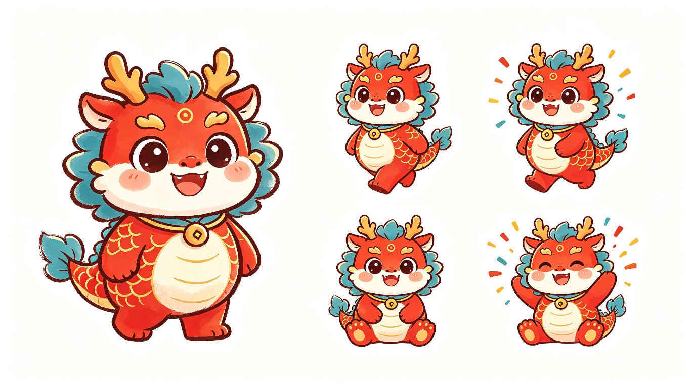
主角：水墨年兽
基础设定
传统年兽形象Q版化：狮头、鹿角、鱼鳞身，但大眼睛圆身体、胖乎乎极具亲和力。水墨笔触勾勒轮廓，朱砂红为主色调
成长进阶
LV.1 懵懂幼兽（无装备）→ LV.6 红绸少年（红绸带）→ LV.12 玉佩童子（玉佩）→ LV.18 云纹使者（云纹披风）→ LV.24 守护灵兽（金铃）
情绪系统
根据用户任务完成度呈现不同表情：开心（正常进度）/ 打盹（延误提醒）/ 困惑（需要AI帮助时）
互动动作
点击年兽触发互动：作揖、转圈、展示当前等级、提示今日待办。长按可查看详细属性面板
中式房子场景进化
| 装修阶段 | 房子状态 | 新增家具 | 年兽装备 |
|---|---|---|---|
| 前期准备 | 毛坯空房，只有一张旧木桌 | 户型分析台（条案） | 无 |
| 主体拆改 | 墙上挂了设计图纸和卷尺 | 工具架、安全告示牌 | 红绸带 |
| 水电改造 | 新增灯具和插座，亮堂了 | 合同审查台、质检台 | 玉佩 |
| 泥木工程 | 青砖地面铺好，墙面刷白 | 圈椅、茶几、博古架 | 云纹披风 |
| 油工安装 | 胡桃木色家具入场，温馨感 | 格栅隔断、落地灯、绿植 | 金铃 |
| 收尾入住 | 现代中式雅居，奖杯陈列 | 书法挂画、瓷器摆件、窗花 | 守护灵兽完全体 |
成长数值体系
灵气值
完成SOP步骤获得灵气
装修玉石
使用AI工具获得
房子评分
美观+功能+完成度综合
连续签到
每日登录查看进度
核心交互模式
| 交互 | 操作方式 | 反馈效果 |
|---|---|---|
| 移动年兽 | 点击地面目的地 | 年兽自动寻路移动，带水墨拖尾 |
| 家具互动 | 靠近家具点击互动键 | 触发对应AI功能（如条案→户型识别） |
| 拖拽布置 | 拖拽调整家具位置 | 网格吸附对齐，实时预览 |
| 昼夜切换 | 完成阶段自动切换 | 场景光照变化，窗棂透入不同天色 |
| 迷你任务 | 走到特定区域接取 | "去合同审查台检查今日合同" |
年兽装备进阶展示
懵懂幼兽
刚孵化的小年兽，什么都不懂，跟着主人一起学习装修
红绸少年
完成前期准备阶段，年兽系上红绸带，开始懂得装修的基础流程
玉佩童子
完成水电改造阶段，年兽佩戴玉佩，掌握了隐蔽工程的验收标准
云纹使者
完成泥木工程阶段，年兽披上云纹披风，能够鉴别材料品质
守护灵兽
完成全部装修，年兽佩戴金铃，成为新家的守护灵，房子变成现代中式雅居
界面原型补充
装备获得弹窗与进化动画
布局：半透明遮罩 → 装备图标+名称+属性 → 年兽装备预览 → 房子升级对比 → 庆祝按钮
视觉与交互设计
设计哲学："新中式扁平卡通"
整体设计风格定位为"新中式扁平卡通" — 将传统中式美学元素（黛蓝、朱砂、竹青、米白）与扁平卡通的现代设计语言融合，既有文化辨识度，又符合年轻用户的审美习惯。
完整设计规范
| 规范项 | 定义 | 用途 |
|---|---|---|
| 页面标题 | PingFang SC / 20px / Bold / #2C2C2C | 页面级标题 |
| 模块标题 | PingFang SC / 16px / Semibold / #2C2C2C | 卡片标题、章节标题 |
| 正文内容 | PingFang SC / 14px / Regular / #2C2C2C | 主要阅读文字 |
| 辅助说明 | PingFang SC / 12px / Regular / #6B6B6B | 提示文字、时间戳 |
| 标签文字 | PingFang SC / 10px / Medium / #FFFFFF | 状态标签、徽章 |
| 间距系统 | 4px基准单位，所有间距为4的倍数 | 模块间距16px / 卡片内边距12px / 元素间距8px |
| 圆角规范 | 大卡片/按钮12px / 小标签/输入框8px / 头像/图标50% | 统一圆角体系 |
| 阴影规范 | 卡片阴影 0 2px 8px rgba(0,0,0,0.08) / 悬浮阴影 0 4px 16px rgba(74,111,165,0.12) | 层级感知 |
| 图标风格 | 2px描边，圆角端点，中式元素（卷轴、毛笔、铜钱、算盘） | 统一图标语言 |
色彩体系
| 色彩角色 | 色值 | 用途 |
|---|---|---|
| 黛蓝（主色） | #4A6FA5 | 主要按钮、链接、AI功能入口、当前步骤高亮 |
| 朱砂（辅色） | #C84A3E | 年兽主题色、进行中状态、提醒、成就 |
| 竹青（成功色） | #5B8C5A | 已完成状态、验收通过、正面反馈 |
| 檀褐（点缀色） | #8B6F47 | 家具、木质元素、次要功能入口 |
| 米白（背景色） | #F5F0E8 | 页面背景（宣纸质感） |
| 暖白（卡片色） | #FAF7F2 | 内容卡片、模块背景 |
| 墨黑（文字色） | #2C2C2C | 主要文字 |
高保真UI设计稿
以下为8个核心页面的高保真设计稿，展示"新中式扁平卡通"风格的完整落地效果：
1. AI风格测试页
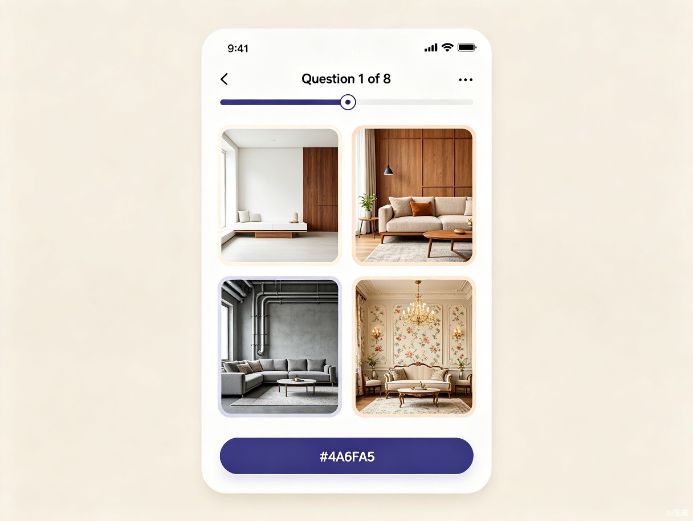
2. 预算健康度仪表盘
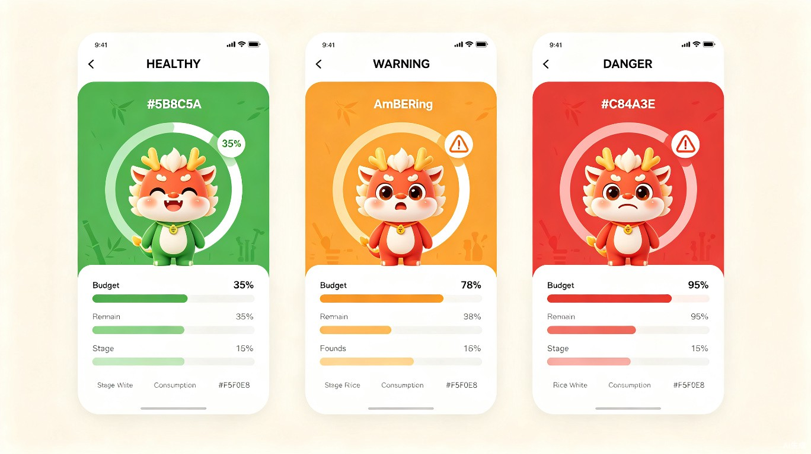
3. 装修流程页
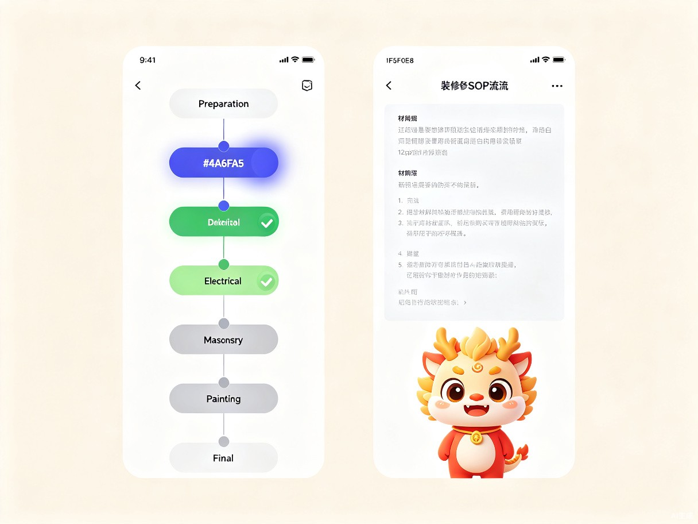
4. 我的家主界面
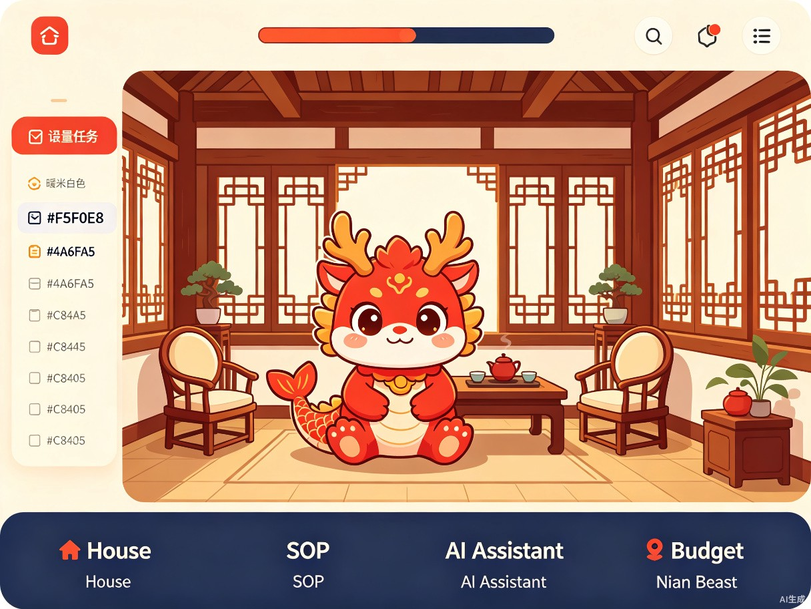
5. AI合同鉴别报告
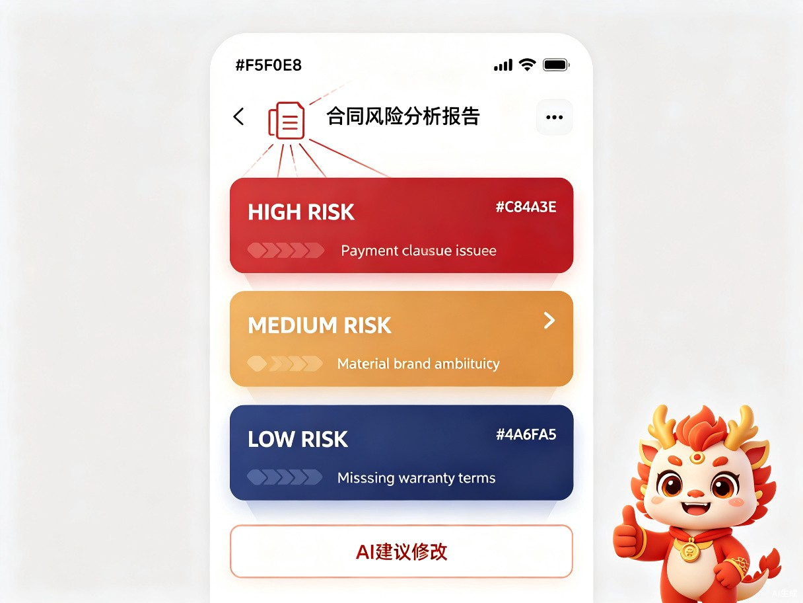
6. 主材采购清单
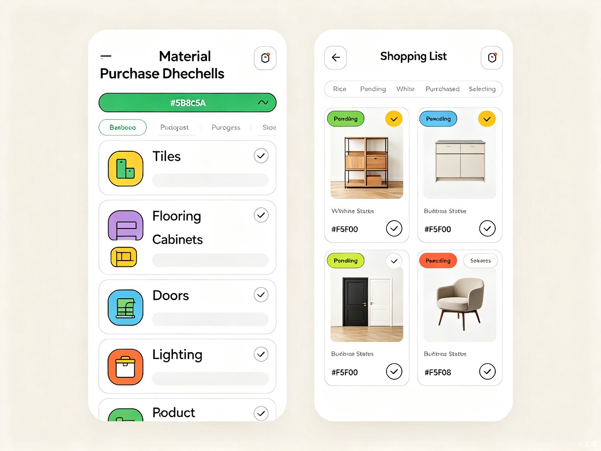
7. 预算仪表盘总览
8. 多端适配方案
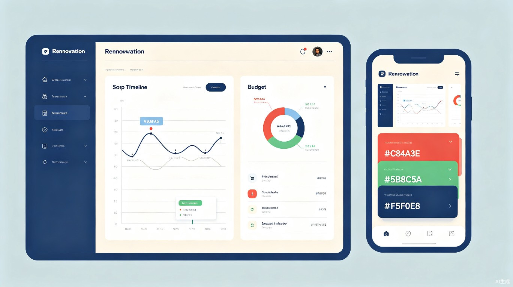
组件库定义
| 组件 | 样式定义 | 使用场景 |
|---|---|---|
| 主按钮 | 黛蓝实心背景，白色文字，12px圆角，hover时加深10% | 主要操作（生成计划、确认完成） |
| 次按钮 | 米白背景，黛蓝边框，黛蓝文字，8px圆角 | 次要操作（重新测试、查看更多） |
| 文字按钮 | 无背景，黛蓝文字，带下划线hover效果 | 链接、跳转 |
| 信息卡片 | 白色背景，1px浅灰边框，12px圆角，8px内边距 | 功能说明、数据展示 |
| 警告卡片 | 浅红背景，左侧4px朱砂边框 | 风险提示、增项预警 |
| 成功卡片 | 浅绿背景，左侧4px竹青边框 | 验收通过、预算健康 |
| SOP步骤条 | 垂直时间线，完成节点竹青实心，当前节点黛蓝脉冲，未来节点灰色空心 | 装修进度展示 |
| 预算执行条 | 水平进度条，分段颜色表示不同阶段，hover显示具体金额 | 预算消耗展示 |
| 年兽经验条 | 铜钱形状环形进度，中心显示等级，外环分段染色 | 养成进度展示 |
组件库Tailwind CSS类名映射
| 设计Token | 值 | Tailwind类名 | 使用示例 |
|---|---|---|---|
| 黛蓝 | #4A6FA5 | bg-[#4A6FA5] text-[#4A6FA5] | <button class="bg-[#4A6FA5] text-white rounded-xl"> |
| 朱砂 | #C84A3E | bg-[#C84A3E] text-[#C84A3E] | <span class="text-[#C84A3E]">预警</span> |
| 竹青 | #5B8C5A | bg-[#5B8C5A] text-[#5B8C5A] | <div class="bg-[#5B8C5A] text-white">通过</div> |
| 檀褐 | #8B6F47 | bg-[#8B6F47] text-[#8B6F47] | <div class="bg-[#8B6F47]">地板</div> |
| 米白 | #F5F0E8 | bg-[#F5F0E8] | <main class="bg-[#F5F0E8] min-h-screen"> |
| 暖白 | #FAF7F2 | bg-[#FAF7F2] | <card class="bg-[#FAF7F2] rounded-xl"> |
| 墨黑 | #2C2C2C | text-[#2C2C2C] | <p class="text-[#2C2C2C]">正文</p> |
| 主按钮圆角 | 12px | rounded-xl | <button class="rounded-xl px-6 py-3"> |
| 次按钮圆角 | 8px | rounded-lg | <button class="rounded-lg px-4 py-2"> |
| 卡片内边距 | 16px | p-4 | <div class="p-4"> |
| Section间距 | 32px | space-y-8 | <section class="space-y-8"> |
多状态设计
空状态
年兽坐在空房间里打盹，气泡提示"还没有预算计划哦，快来设置吧"，配一个"设置预算"主按钮
加载状态
AI分析中显示水墨晕染动画，年兽在转圈等待，进度条以毛笔笔触效果逐笔书写
异常状态
网络断开时年兽抱头蹲下，提示"信号不太好，稍后再试"，提供重试按钮
成功状态
步骤完成时全屏水墨粒子爆发，年兽跳舞庆祝，弹出"恭喜解锁新装备"弹窗
加载/空/异常/成功四态界面原型
加载状态
水墨晕染背景+毛笔笔触进度条+年兽转圈
空状态
年兽打盹+气泡提示+操作按钮
异常状态
年兽抱头蹲下+重试按钮
成功状态
水墨粒子爆发+年兽跳舞+装备弹窗
动效设计说明
| 动效 | 触发条件 | 效果描述 | 技术实现 |
|---|---|---|---|
| 水墨拖尾 | 年兽移动 | 年兽移动路径留下淡墨笔触，1.5秒后渐隐 | Canvas粒子系统 |
| 墨滴扩散 | 步骤完成 | 点击完成后，从按钮中心扩散圆形墨滴，覆盖步骤卡片变绿 | CSS radial-gradient动画 |
| 铜钱旋转 | 预算解锁 | 新预算池解锁时，铜钱图标旋转360度并放大弹跳 | CSS transform动画 |
| 昼夜切换 | 阶段完成 | 场景光照从暖黄日光渐变为深蓝夜色，窗棂透入月光 | CSS filter + transition |
| 年兽表情 | 预算状态变化 | 健康→开心眨眼，预警→困惑挠头，危险→紧张抱头 | CSS sprite动画 |
关键动画CSS代码示例
@keyframes nian-bow {
0% { transform: translateX(-100%) scale(0.9); opacity: 0; }
60% { transform: translateX(0) scale(1.05); opacity: 1; }
80% { transform: translateX(0) scale(1) rotate(0deg); }
100% { transform: translateX(0) scale(0.98) rotate(-5deg); }
}
/* 应用: .nian-beast.bow { animation: nian-bow 1.5s ease-out-bounce forwards; } */
@keyframes gear-pop {
0% { transform: scale(0) rotate(-45deg); opacity: 0; }
50% { transform: scale(1.2) rotate(10deg); opacity: 1; }
70% { transform: scale(0.95) rotate(-5deg); }
100% { transform: scale(1) rotate(0deg); opacity: 1; }
}
/* 应用: .gear-item.pop { animation: gear-pop 0.6s cubic-bezier(0.34, 1.56, 0.64, 1) forwards; } */
降低学习成本的设计
| 设计点 | 具体方案 |
|---|---|
| 新手引导 | 首次进入时年兽3步气泡引导，高亮关键操作区域 |
| 渐进信息 | SOP步骤默认只显示标题，点击展开详细指引，避免信息过载 |
| 自然语言 | AI助手对话式交互，输入"厨房插座不够怎么办"直接得答案 |
| 即时反馈 | 标记完成时步骤变绿+水墨粒子动画，获得装备时弹出庆祝 |
| 容错设计 | 工期延误不惩罚，仅温馨提示"比计划晚了X天，建议调整" |
数据指标与验证
DEMO验证指标
| 指标 | 目标值 | 测量方式 |
|---|---|---|
| 风格测试结果采纳率 | >= 60% | 用户确认推荐风格 / 完成测试 |
| AI户型识别体验完成率 | >= 80% | 看完识别结果 / 上传户型图 |
| SOP步骤完成率（20步） | >= 50% | 完成步骤 / 总步骤 |
| AI合同鉴别使用率 | >= 50% | 使用合同鉴别 / 到达合同步骤 |
| 年兽互动率 | >= 70% | 与年兽互动 / 进入房子 |
| 5分钟闭环完成率 | >= 40% | 完成核心链路 / 开始体验 |
| 预算拆解完成率 | >= 85% | 完成预算设置 / 进入预算模块 |
| 阶段预算执行偏差率 | <= 15% | |实际支出-预算| / 预算 |
| 增项预警触发率 | <= 20% | 触发预警 / 总阶段数 |
| 主材采购预算达成率 | >= 80% | 按预算完成采购 / 总采购项 |
| 对话流完成率 | >= 92% | 完成风格探测 / 开始对话 |
| AI施工质检节点覆盖率 | >= 90% | 质检完成节点 / 总质检节点 |
| 演示完整播放率 | >= 90% | 完整看完演示 / 开始演示 |
| 演示模式异常兜底触发率 | <= 5% | 触发视频兜底 / 总演示次数 |
DEMO功能优先级
| 模块 | 功能 | 优先级 | DEMO展示方式 |
|---|---|---|---|
| 风格测试 | AI风格测试（5题） | P0 | 真实交互 |
| 风格诊断报告 | P0 | 真实生成 | |
| 引导采集 | 对话式问卷 | P0 | 真实交互 |
| AI户型识别 | P0 | 模拟识别动画+预置结果 | |
| 装修流程 | 线性步骤解锁 | P0 | 真实状态机 |
| 操作指引展示 | P0 | 真实内容 | |
| 主材采购提醒 | P0 | 真实推送 | |
| AI辅助 | 户型图识别 | P0 | 模拟AI处理 |
| 合同风险鉴别 | P0 | 预置案例+模拟扫描 | |
| 施工质量检测 | P1 | 预置照片+模拟检测 | |
| 我的家 | 年兽角色展示 | P0 | CSS动画 |
| 中式房子场景进化 | P1 | 阶段切换展示 | |
| 家具拖拽布置 | P2 | 简化演示 | |
| 预算管理 | 智能预算拆解 | P0 | 真实计算交互 |
| 阶段预算释放 | P0 | 与SOP联动 | |
| 增项预警防火墙 | P1 | 阈值触发演示 |
前端：React/Vue + Tailwind CSS + Canvas（平面渲染）
AI模拟：预置数据 + 动画模拟AI处理过程
部署：静态托管（Vercel/Netlify），无需后端即可演示核心链路